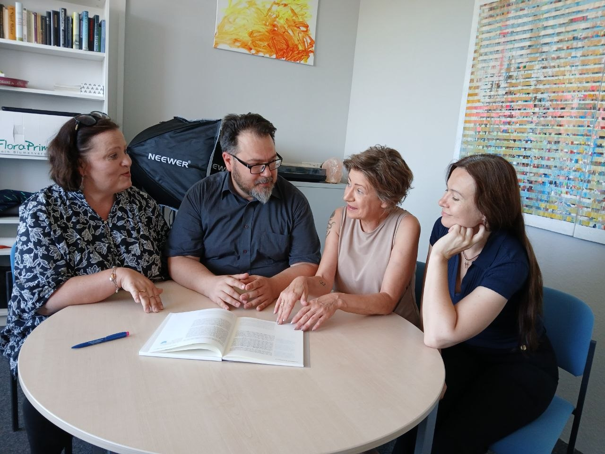

КАТАЛОГ ЭКСПЕДИЦИЙ · ВЫПУСК №01 · 2027
«В 1840 году они позировали в мастерской, уверенные, что их мир вечен. Через два года город сгорел — а выживших запечатлела уже не кисть, а серебряная пластина дагеротипа».
Камерные философские экспедиции по Германии
Неделимые 4-дневные интеллектуальные погружения по личному графику к.ф.н. Сергея Григоришина. Единый отель для всей группы, лекции в арендованном конференц-зале и организованные визиты в музеи (группа 4–10 человек).
АРХИТЕКТУРА ЭКСПЕДИЦИИ · 4 ОПОРЫ
Цельный 4-дневный формат без суеты
КАРТОГРАФИЯ МАРШРУТОВ · 2027
Земли Германии и план ключевых точек
ABFAHRTSTAFEL · ГРАФИК ПОЕЗДОК НА 2027
ГРУППА: 4–10 ЧЕЛ.
TRIAL-ВЕРСИЯ ЭКСКУРСИИ · 1808–1843
Герои, их полотна и живой кино-разбор: 1840 против 1843


1840 · КИСТЬ ГЕНСЛЕРА
Гюнтер Генслер (1803–1884)
Автор полотна 1840 г., идеолог союза

VIDEO · PLACEHOLDER
Видео-приглашение Сергея Григоришина
Слот подготовлен под видео-обращение (01:15)
АВТОР И ВЕДУЩИЙ ЭКСПЕДИЦИЙ
Сергей Григоришин


ПРЕДВАРИТЕЛЬНАЯ ЗАПИСЬ · БЕЗ ОПЛАТЫ НА САЙТЕ
Единый формат и запись через Telegram-бот
Предварительная заявка-билет (Fahrkarte)
ЧАСТЫЕ ВОПРОСЫ